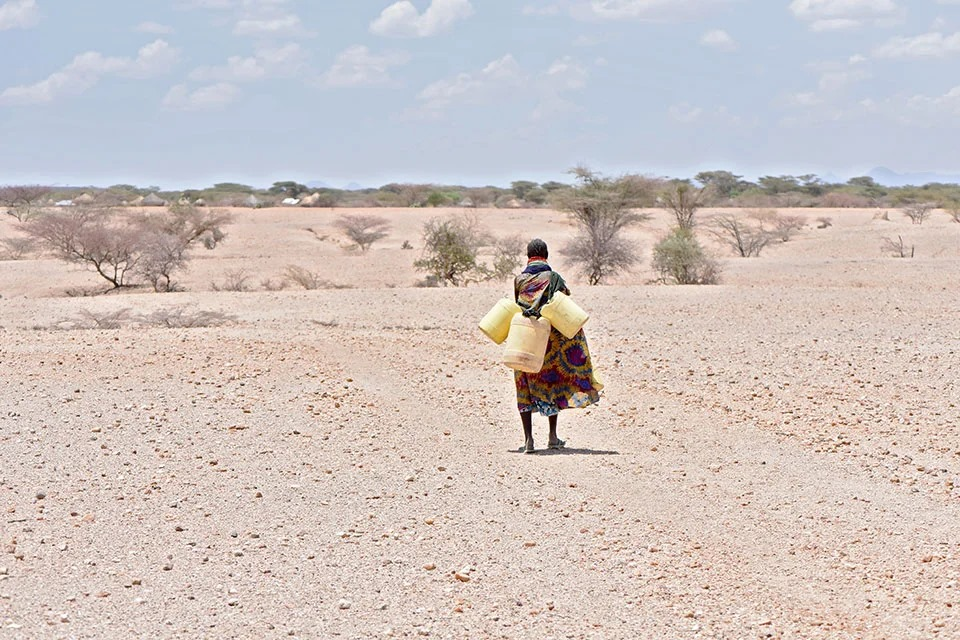

Climate Vulnerability: Sub-Saharan Africa is highly vulnerable to climate change, experiencing extreme weather events such as droughts, floods, and erratic rainfall.
Women's Workforce: Women comprise 60-80% of the agricultural workforce but face barriers to land ownership, financial resources, and access to technology.
Cycle of Vulnerability: Climate change exacerbates pre-existing gender inequalities, creating a cycle of vulnerability for women.
Global Relevance: The intersection of climate change and gender inequality threatens global food security, economic development, and human rights.
Problem Statement
Agricultural Vulnerability: Women produce 70% of food but own less than 15% of agricultural land, limiting access to credit, resources, and technology.
Resource Scarcity: Women collect 90% of water and fuel in rural areas; climate change increases water scarcity, forcing longer travel distances.
Displacement and Disaster Impact: Climate disasters displace millions, with women facing heightened risks of livelihood loss, gender-based violence, and food insecurity.
Why It Matters: Without intervention, climate crises will deepen gender disparities, exacerbate poverty, and undermine progress toward gender equality and sustainable development.
Case Description
Climate Events in Sub-Saharan Africa:
Drought in East Africa (2011-2012): Affected 13 million people; women and children were most impacted by food insecurity and displacement.
Cyclone Idai (2019): One of Africa's worst tropical cyclones, impacting 3 million people; women and girls faced loss of homes, livelihoods, and access to services.
Desertification in the Sahel: Affects 135 million people; women bear the burden of securing food, water, and fuel in barren landscapes.
Key Players:
Women Farmers: Produce the majority of food but lack access to climate-resilient resources, technology, and land rights.
International Organizations: WFP and UN Women provide relief, gender-sensitive interventions, and climate adaptation support.
Governments and NGOs: Implementing projects to enhance women's access to water, clean energy, and climate-smart agriculture, though efforts are often underfunded.
Actions Taken:
Global Initiatives: UN Women’s Climate Resilience Initiative supports African women in adopting climate-resilient agricultural techniques and improving water management.
Local Adaptation Programs: In Kenya, women's groups lead reforestation efforts and sustainable land-use practices.

Solutions/Lessons Learned
Land Rights Reforms:
Secure land rights improve women’s resilience to climate change and encourage sustainable farming practices.
Women-led reforestation in Kenya has enhanced food security and mitigated desertification impacts.
Access to Climate Finance:
Increasing access to loans, insurance, and grants can enhance women's adaptability to climate change.
A project in Uganda provided low-interest loans for drought-resistant seeds, improving food security and yields.
Improved Representation in Climate Governance:
Women's inclusion in climate governance fosters effective and sustainable climate policies.
Rwanda has made progress in including women in environmental policymaking, leading to gender-sensitive climate resilience projects.
Conclusion
Climate change exacerbates gender inequality, affecting women in rural and marginalized communities.
Tackling gender inequality in climate policies is crucial for enhancing women's resilience and achieving global food security and sustainable development goals.
Implementing land rights reform, increasing climate finance, and ensuring gender-inclusive governance are essential to address the dual challenges of gender inequality and climate change globally.